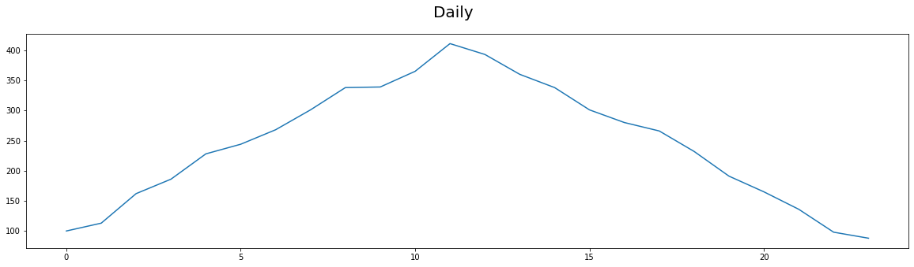
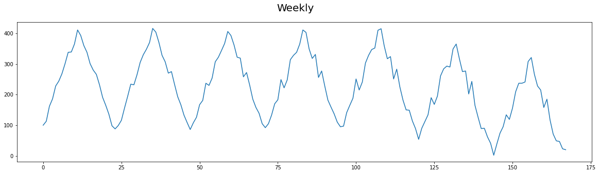
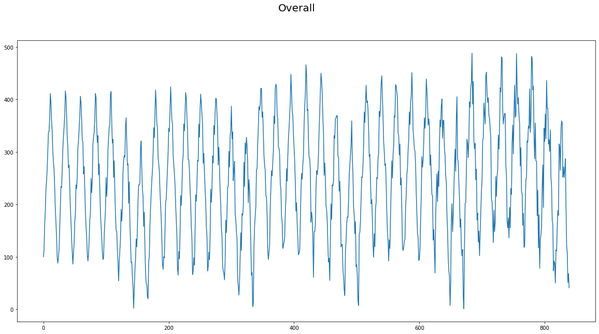
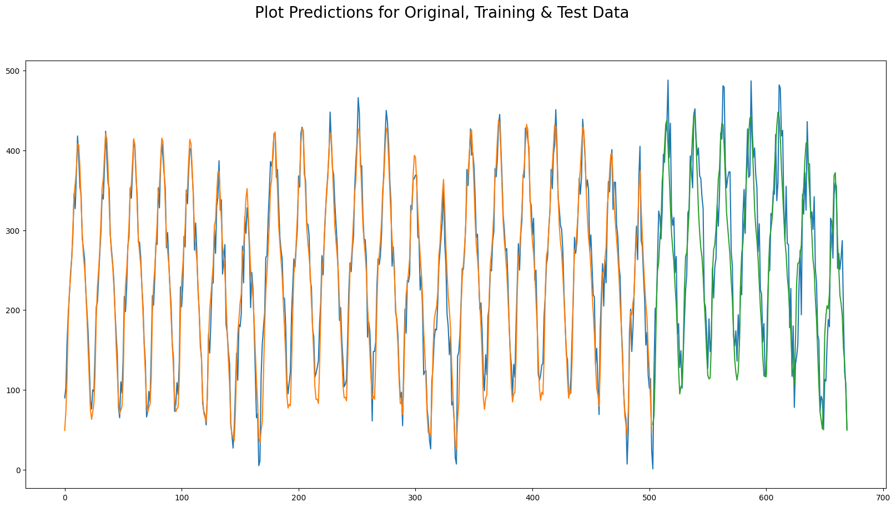

이번 예제에서는 시계열 데이터를 이용하여 수요를 예측하는 모델을 작성해보겠습니다. 데이터는 시간 당 수요로, 5주간 데이터가 기록되어있습니다.
Loading Required Libraries & Data
import numpy as np
import pandas as pd
import matplotlib.pyplot as plt
np.random.seed(1)
#Load the sequence data from CSV
requests = pd.read_csv('requests_every_hour.csv',header=0)
#Review loaded data
print(len(requests)) # 24 * 7 * 5 = 840
requests.head()840| Requests |
|---|
| 100 |
| 113 |
| 162 |
| 186 |
| 228 |
시계열 분석
데이터의 추세와 패턴에 대해 알아보겠습니다.
#Plat the data loaded to visualize trends
#daily
plt.figure(figsize=(20,5)).suptitle("Daily", fontsize=20)
plt.plot(requests.head(24))
plt.show()
#weekly
plt.figure(figsize=(20,5)).suptitle("Weekly", fontsize=20)
plt.plot(requests.head(168))
plt.show()
#all
plt.figure(figsize=(20,10)).suptitle("Overall", fontsize=20)
plt.plot(requests)
plt.show()


- 주기적 패턴 : 매일 11시 ~ 12시 사이에 수요가 가장 높습니다.
- 계절적 패턴 : 매주 일요일이 다른 요일 보다 수요가 적음을 알 수 있습니다.
- 추세 : 전체로 보았을 때는 약간의 성장세가 있음을 알 수 있습니다.
이 시계열 데이터의 주기적 패턴 / 계절적 패턴 / 추세를 고려하려 모델을 만들어보도록 하겠습니다.
Data preprocessing
from sklearn.preprocessing import StandardScaler
#Scale the data
print("Request Range before scaling : " ,
min(requests.Requests),
max(requests.Requests))
scaler = StandardScaler()
scaled_requests=scaler.fit_transform(requests)
print("Request Range after scaling : " ,
min(scaled_requests),
max(scaled_requests))
#Training data has to be sequencial - first 4 weeks
train_size = 24 * 7 * 4
#Number of samples to lookback for each sample - 1 week
lookback=24 * 7
#Separate training and test data
train_requests = scaled_requests[0:train_size,:]
#Add an additional week for lookback.
test_requests = scaled_requests[train_size-lookback:,:]
print("\n Shaped of Train, Test : ",
train_requests.shape, test_requests.shape)Request Range before scaling : 1 488
Request Range after scaling : [-2.28221282] [2.23748868]
Shaped of Train, Test : (672, 1) (336, 1)#Prepare RNN Dataset.
#Each data point (X) is linked to the previous data points of size=lookback
#The predicted value (Y) is the next point
def create_rnn_dataset(data, lookback=1):
data_x, data_y = [], []
for i in range(len(data)- lookback -1):
#All points from this point, looking backwards upto lookback
a = data[i:(i+ lookback), 0]
data_x.append(a)
#The next point
data_y.append(data[i + lookback, 0])
return np.array(data_x), np.array(data_y)
#Create X and Y for training
train_req_x, train_req_y = create_rnn_dataset(train_requests,lookback)
#Reshape for use with LSTM
train_req_x = np.reshape(train_req_x,
(train_req_x.shape[0], 1, train_req_x.shape[1]))
print("Shapes of X, Y: ",train_req_x.shape, train_req_y.shape)Shapes of X, Y: (503, 1, 168) (503,)Build a LSTM model
from keras.models import Sequential
from keras.layers import LSTM,Dense
import tensorflow as tf
tf.random.set_seed(3)
#Create a Keras Model
ts_model=Sequential()
#Add LSTM
ts_model.add(LSTM(256, input_shape=(1,lookback)))
ts_model.add(Dense(1))
#Compile with Adam Optimizer. Optimize for minimum mean square error
ts_model.compile(loss="mean_squared_error",
optimizer="adam",
metrics=["mse"])
#Print model summary
ts_model.summary()
#Train the model
ts_model.fit(train_req_x, train_req_y,
epochs=5, batch_size=1, verbose=1)Model: "sequential_1"
_________________________________________________________________
Layer (type) Output Shape Param #
=================================================================
lstm_1 (LSTM) (None, 256) 435200
dense (Dense) (None, 1) 257
=================================================================
Total params: 435,457
Trainable params: 435,457
Non-trainable params: 0
_________________________________________________________________
Epoch 1/5
503/503 [==============================] - 6s 9ms/step - loss: 0.1587 - mse: 0.1587
Epoch 2/5
503/503 [==============================] - 3s 6ms/step - loss: 0.0787 - mse: 0.0787
Epoch 3/5
503/503 [==============================] - 3s 6ms/step - loss: 0.0668 - mse: 0.0668
Epoch 4/5
503/503 [==============================] - 6s 12ms/step - loss: 0.0499 - mse: 0.0499
Epoch 5/5
503/503 [==============================] - 4s 7ms/step - loss: 0.0539 - mse: 0.0539
<keras.callbacks.History at 0x7fae2c2dae90>Test the Model
#Preprocess the test dataset, the same way training set is processed
test_req_x, test_req_y = create_rnn_dataset(test_requests,lookback)
test_req_x = np.reshape(test_req_x,
(test_req_x.shape[0],1, test_req_x.shape[1]))
#Evaluate the model
ts_model.evaluate(test_req_x, test_req_y, verbose=1)
#Predict for the training dataset
predict_on_train= ts_model.predict(train_req_x)
#Predict on the test dataset
predict_on_test = ts_model.predict(test_req_x)
#Inverse the scaling to view results
predict_on_train = scaler.inverse_transform(predict_on_train)
predict_on_test = scaler.inverse_transform(predict_on_test)6/6 [==============================] - 1s 4ms/step - loss: 0.1557 - mse: 0.1557
16/16 [==============================] - 0s 3ms/step
6/6 [==============================] - 0s 4ms/step#Plot the predictions
#Total size of plot
total_size = len(predict_on_train) + len(predict_on_test)
#Plot original data
orig_data=requests.Requests.to_numpy()
orig_data=orig_data.reshape(len(orig_data),1)
#Create a plot for original data
orig_plot = np.empty((total_size,1))
orig_plot[:, :] = np.nan
orig_plot[0:total_size, :] = orig_data[lookback:-2,]
#Create a plot for predictions on training
predict_train_plot = np.empty((total_size,1))
predict_train_plot[:, :] = np.nan
predict_train_plot[0:len(predict_on_train), :] = predict_on_train
#Create a plot for predictions on testing
predict_test_plot = np.empty((total_size,1))
predict_test_plot[:, :] = np.nan
predict_test_plot[len(predict_on_train):total_size, :] = predict_on_test
#Plot the graphs
plt.figure(figsize=(20,10)).suptitle("Plot Predictions for Original, Training & Test Data", fontsize=20)
plt.plot(orig_plot)
plt.plot(predict_train_plot)
plt.plot(predict_test_plot)
plt.show()